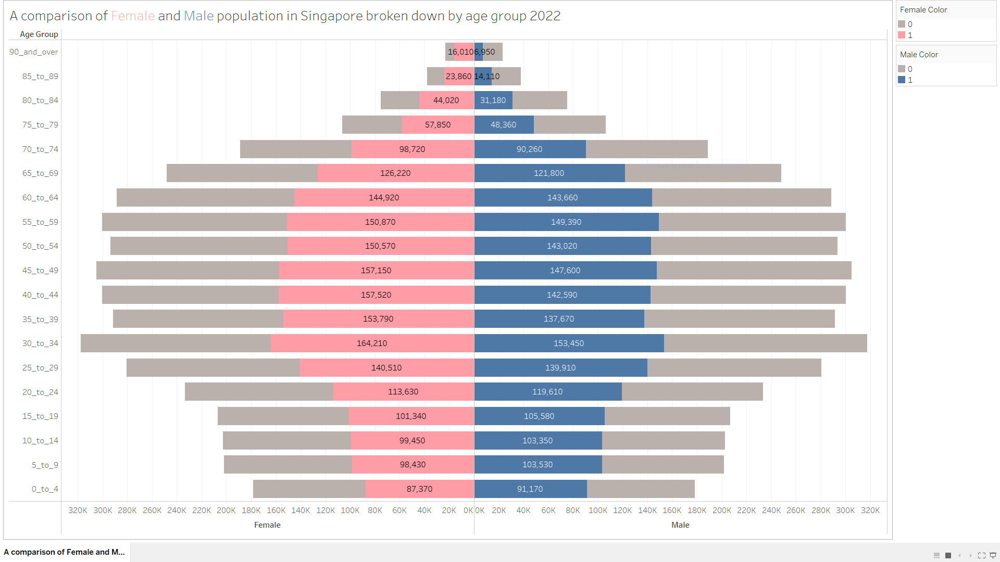

Take-home Exercise 01
1. Introduction
In this exercise, the basic demographic structure of Singapore top 9 biggest planning areas categorised by gender and age group is being studied.
Data used is extracted from Department of Statistics, Singapore. The population data snapshot from June 2022 is being studied mainly.
2. Data Preparation
Inside the downloaded excel file, there are “Total” elements inside all columns. To load into Tableau for visualization and therefore, for better analysis purpose, we will need to do some basic data cleaning.
Data Cleaning
With the raw excel file not to be touched, a new Excel document is created to consolidate all needed raw data with the same table headers pasted over.
Given that planning area level data are to be studied, “Total Planning Area” and “Total Male and Female” data are removed as they are now redundant. If needed, total could be easily computed inside Tableau by summing up all the rest data.
Both male and female data are copied and consolidated into our new Excel files. A new column “Gender” is introduced. All data entries pasted are tagged accordingly based on the raw data.
Save the Excel data file and rename it properly.

Data Loading
Open a new Tableau workbook and import data using the Excel file.
For easier data manipulation later on, switch the data type of ‘2022’ to integer from text (highlighted in yellow).

3. Data Visualisation
Age-sex pyramid was taught be an analytical visualisation commonly used by demographers to reveal the structure of population by gender and age group.
Overall Singaporean Population Pyramid
Two calculated fields are created to facilitate the visualisation preparation:
```{r}
# | output: asis
Male:
if [Gender]="MALE"
then [2022]
END
Female:
if [Gender]="MALE"
then [2022]
END
```To produce the desired visualisation, follow below steps:
Drag the ‘Age Group’ from Data panel into Filters section, select ‘All’ and de-select ‘Total’ option at the bottom of the list.
Drag the ‘Subzone’ from Data panel into Filters section, select ‘All’ and de-select ‘Total’ option inside the list.
Drag the ‘Type of Dwelling’ from Data panel into Filters section, select ‘Total’ option at the bottom of the list.
Drag the two created measures from Data panel into columns bar.
Drag the ‘Age Group’ from Data panel into rows bar.
Sort the ‘Age Group’ by clicking the white downwards pointing arrow, choose ‘Sort’ and sort by ‘Alphabetic’ in descending order.
Drag the line ‘5-9’ inside the worksheet from ‘Age Group’ column to one line above ‘0-4’. With this, the age group should have been sorted in a descending manner entirely.
Drag the ‘Female’ from Data panel into Marks section ‘Color’. Choose a color that you would like to assign to Female population data. Here, color pink is used.
Drag the ‘Male’ from Data panel into Marks section ‘Color’, Choose a color that you would like to assign to Male population data. Here, color blue is used.
Therefore, a population pyramid of Singapore has been completed. See below.

Selection of Nine Planning Areas
The task requested nine planning areas to be presented on a single view.
To find out areas to work on, it’s more of my interest to filter based on total population. Below are actions that I have taken to achieve that.
Drag the ‘2022’ values from Data panel into columns bar.
Drag the ‘Planning Area’ text from Data panel into rows bar.
Drag the ‘Age Group’ item from Data panel into Filters section, select ‘Total’.
Drag the ‘Subzone’ item from Data panel into Filters section, select ‘Total’.
Drag the ‘Type of Dwelling’ item from Data panel into Filters section, select ‘Total’.
Drag the ‘Gender’ item from Data panel into Filters section, select ‘TOTAL’.
Sort the ‘Planning’ by clicking the white downwards pointing arrow, choose ‘Sort’ and sort by ‘Field’ in descending order. Choose the field to be sorted with to be ‘2022’ from the drop-down list. The aggregation we use here remains ‘Sum’.
This would enable us to visualise the top few planning areas according to total area population. However, to make the list of top area more clearly, additional calculated fields ‘Labels’ and ‘Top N Planning Area’ were created, together with an additional parameter ‘Top Planning Areas’. Since this is not compulsory step to achieve the requirement, I will not go into step by step details on this part. If interested, you may find workings inside the workbook attached.
Hence, below chart is completed.
From here, the 9 areas that is being chosen to study on are Bedok, Tampines, Jurong West, Sengkang, Woodlands, Hougang, Yishun, Choa Chu Kang and Punggol. For the analysis purpose later, a population pyramind of these chosen 9 areas are also plotted by following above Overall Singaporean Poppulation Pyramid steps, with an additional step of dragging ‘Planning Area’ data item from Data panel into Filters section, the nine chosen areas are therefore selected.

Trellis Display of Population Pyramid of The Nine Planning Areas
In this exercise, the nine planning areas are requested to be presented on a single view. To do that, a trellis display will be applied. Following below steps that will lead us to the desired output.
Duplicate the worksheet ‘Population Pyramid_Top_9_Area_SG_2022’.
Rename the worksheet to ‘Trellis_Population Pyramid_Top_9_Area_SG_2022’.
Drag the ‘Planning Area’ text from Data panel into rows bar.
The trellis display is therefore completed.

Final Dashboard
The final dashboard is produced by putting together some significant worksheets. Here, three worksheets have been chosen to present together to complete the whole story.